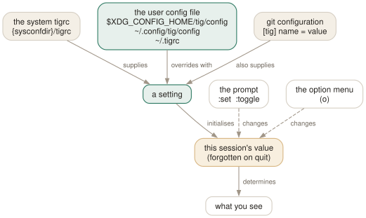

Day 07
Options and your first tigrc
A setting is the same thing at the prompt and in the file.
By the end of today you can
- find where your config file belongs, and know which of the three locations wins
- try a setting at the prompt, then keep it, without ever restarting to test
- read a tig warning and fix the line it names
You have been configuring tig for six days
Every toggle you have pressed — D, A, ], W — changed a setting. The only thing a config file adds is that the change survives quitting. That is the whole idea, and it means you never have to guess what a setting does: try it at the prompt, keep it if you like it.
The three forms are the same thing written three ways:
# at the prompt, for this session
:set diff-context = 5
# in ~/.tigrc, for every session
set diff-context = 5
# in git config, for this repository or globally
[tig] diff-context = 5

Where the file goes, and which one wins
tig reads a system file first and then exactly one user file, chosen by this rule:
- If
$XDG_CONFIG_HOMEis set, read$XDG_CONFIG_HOME/tig/config. - Otherwise, if
~/.config/tig/configexists, read that. - Otherwise read
~/.tigrc.
This course writes to ~/.tigrc because it is the name tigrc(5) uses throughout. If you prefer the XDG location, use it consistently and keep only one.
Settings from git config, and when to use them
Anything you can set in ~/.tigrc can live in git configuration instead, under a [tig] section:
[tig]
show-changes = true
tab-size = 4
[tig "color"]
cursor = yellow red bold
[tig "bind"]
generic = P parent
The reason to care is scope. Git config is per repository when it is in .git/config, so this is how you say “in this one repository, with its eight-space tabs and its enormous history, do things differently”. Everything else belongs in ~/.tigrc.
tig also reads a handful of ordinary git settings and honours them: core.abbrev for the width of commit IDs, core.editor for e, gui.encoding for file contents, and your color.* settings, which Day 14 comes back to.
The syntax, in one screen
tigrc(5) has four commands. You meet the first today and the rest over the next week.
setname = value- A setting.
+=appends to a string one. bindkeymap key action- A key binding. Day 12.
colorarea fg bg [attrs]- A colour rule. Day 14.
sourcepath- Read another file here.
-qto ignore a missing one.
Comments start with # and run to end of line. A line ending in a backslash continues onto the next, which is how the long column specifications on Day 11 stay readable. Values may be quoted with ' or " when they contain spaces.
Types are bool, int, string and mixed. For booleans, 1, true and yes are true and anything else is false — so a typo in a boolean value silently turns the setting off rather than reporting an error.
When something is wrong with the file
tig reports config problems and then carries on. A file with two bad lines gives you:
$ tig 2>&1 | head
tig warning: /home/you/.tigrc:1: Unknown option name: bogus-option
tig warning: /home/you/.tigrc:2: Value must be between 1 and 1024
tig warning: Errors while loading /home/you/.tigrc.
File, line number, and what was wrong. The rest of the file still applied. Because these scroll past before the first view draws, tig 2>&1 | head after every edit is a habit worth having — it is the only reliable way to notice that one of your forty lines stopped working after an upgrade.
Your first four lines
The rule for this file, from here to Day 14: never add a line you cannot defend. Not “everyone sets this”. If you cannot say what it does and why you want it, leave it out — you can always add it in a month when the need is real.
Four lines you have earned over the last six days:
Today's habit
For the rest of the course, when you find yourself pressing the same toggle every time you open tig, stop and write it down instead, with a comment saying why. That comment is what stops the file becoming something you are afraid to touch.
Tomorrow: the views that follow a file rather than a commit.
New vocabulary
Commands
| Command | Does |
|---|---|
:set <name> = <value> | Change a setting for this session. |
:toggle <name> | Cycle a setting. :toggle diff-context +3 steps by three. |
:source <file> | Read a config file now. Later lines win over earlier ones. |
:save-options <file> | Write every current setting and binding to a file. |
Options
| Option | Does |
|---|---|
mailmap | Apply .mailmap. Default yes, whatever tigrc(5) says. |
Today's configappend to ~/.tigrc
Case-insensitive searching until you type a capital letter, which is what you meant nearly every time. tig's default is fully case-sensitive.
set ignore-case = smart-case
Three lines of context is rarely enough to tell which function a change sits in. Five usually is, and ] still widens further when a particular diff needs it.
set diff-context = 5
When reading history the question is almost always how long ago, not on which Tuesday. D still cycles to an absolute date when you need to quote one.
set main-view-date = relative
Stop at the ends of a view rather than silently wrapping to the top, so that walking search results with n terminates instead of looping.
set wrap-search = no
tig reads this only at startup. Reload without quitting by binding :source ~/.tigrc to a key (Day 12), or check it with tig 2>&1 | head — errors arrive as tig warning: lines before the first view draws.
Drillsdo these in a real terminal, today
Self-check
Answer out loud first, then unfold.
You put set main-view-date = relative in your config, but you have never heard of a main-view-date setting and it is not in the list of variables. Why does it work?
It is a shorthand. The real setting is main-view, whose value is a list of column specifications. Appending a column name to a view setting addresses that column alone, so main-view-date means “the date column of the main view”.
You can watch it happen: set it, then :save-options and look at main-view. The date:default part has become date:relative and everything else is untouched. Day 11 is this mechanism in full.
tigrc(5) says mailmap is off by default. You have never configured it, and author names in your repository are visibly being rewritten by .mailmap. Who is wrong?
The manual page. On 2.6.1 the built-in default is yes — confirmed by starting tig with the system config disabled entirely and dumping the settings, which reports set mailmap = yes.
This is the general lesson for the rest of the course: when tigrc(5) and the binary disagree, :save-options settles it in five seconds. Day 14 lists the other disagreements found while writing this.
You have a line in ~/.tigrc with a typo. What happens to the rest of the file?
It still loads. tig reports each bad line individually as tig warning: <file>:<line>: <message>, then a summary line, and carries on. A broken config does not give you a broken tig — it gives you a tig missing one setting.
That is convenient and easy to miss, because the warnings scroll past before the first view draws. tig 2>&1 | head is the way to read them deliberately after editing the file.
Your colleague's settings live in ~/.config/tig/config and yours in ~/.tigrc. You copy their file to your machine and nothing changes. Why?
Because tig reads one user file, not both, and the rule is positional. If $XDG_CONFIG_HOME is set it reads $XDG_CONFIG_HOME/tig/config. Otherwise it reads ~/.config/tig/config if that file exists, and falls back to ~/.tigrc only if it does not.
So creating the XDG file silently retires your ~/.tigrc. Keep one or the other, and if you need to know which tig actually read, set TIGRC_USER explicitly.
Cheat sheet
Configuration, compressed. The workflow is always: try at the prompt, then keep.
:set name = value # this session only
:toggle name [+N|-N] # cycle, or step a number
set name = value # in the file, forever
[tig] name = value # in git config; .git/config = this repo only
# file: $XDG_CONFIG_HOME/tig/config, else ~/.config/tig/config, else ~/.tigrc
# ONE of those, not all three — creating the XDG one retires ~/.tigrc
:source ~/.tigrc # reload without restarting
:save-options /tmp/x # every live setting and binding: the real reference
tig 2>&1 | head # read the 'tig warning:' lines after every edit
Everything through Day 07
Keys
| Key | Does |
|---|---|
| m | Open the main view — the one-line-per-commit list. |
| d | Open the diff view for the selected commit. |
| s | Open the status view: the working tree. S does the same. |
| h | Open the help view: every binding that is live right now. |
| q | Close this view and fall back to the one underneath. Quits if it is the last. |
| Q | Quit immediately, however deep the stack. |
| R | Reload the current view by re-running its git command. |
| v | Show the version — and prove which build you are on. |
| z | Stop all background loading. For when you opened a 200,000-commit history. |
| D | Cycle the date column: default, relative, compact, custom, hidden. |
| A | Cycle the author column: full, abbreviated, email, user, hidden. |
| X | Show or hide the abbreviated commit ID column. |
| G | Cycle the graph in the main view: v2, v1, off. |
| F | In the main view, show or hide the ref labels. |
| # | Show or hide line numbers. |
| ~ | Switch the line graphics between ASCII and the drawing characters. |
| o | Open the option menu: the same toggles, with their current values. |
| jk | Move the cursor down and up. Arrow keys work too, with a caveat on Day 3. |
| Enter | Open the selected line. From the main view, splits and shows the diff. |
| Tab | Move focus to the other view in a split. |
| UpDown | Move to the previous/next entry — in the parent view, even from the child. |
| JK | Same as the arrow keys: next and previous entry. |
| O | Maximise the focused view to fill the display. |
| < | Go back to the previous view state. |
| , | Move to the parent: the parent directory, or the parent commit. |
| Space- | Page down and page up. |
| C-dC-u | Half a page down and up. |
| ] | Increase the diff context by one line. |
| [ | Decrease the diff context by one line. |
| @ | Jump to the next chunk header. Implemented as a search — see today's gotcha. |
| % | Toggle the file filter: show the whole commit, not just the file you came from. |
| W | Toggle whitespace-insensitive diffing. |
| $ | Highlight commit-title text past the conventional width. |
| / | Search forwards. Prompts for a regexp. |
| ? | Search backwards. |
| n | Next match. N for the previous one. |
| : | Open the prompt. |
| H | Jump to the HEAD commit, in the main view. |
| u | Stage or unstage: the file in the status view, the chunk in the stage view. |
| 1 | Stage or unstage the single line under the cursor. |
| 2 | Stage or unstage part of a chunk: from here to the end of it. |
| \ | Split the current chunk into smaller chunks. |
| ! | Revert: throw away the chunk or file under the cursor. Prompts first. |
| M | Resolve an unmerged file with git mergetool. |
| C | Commit. Runs git commit in the foreground, in the status view. |
Commands
| Command | Does |
|---|---|
tig | Open the main view for the current branch. |
tig status | Start in the status view instead. |
tig -C <path> | Run as if started in path. |
tig -v | Print the version and exit. Also reveals the optional features built in. |
tig show <rev> | Open a commit directly in the diff view. |
tig --word-diff=plain | Word-level rather than line-level diffing. |
:42 | Jump to line 42 of this view. |
:2f12bcc | Jump to that commit. |
:goto <rev> | Jump to a revision: a branch, a tag, HEAD~3, %(commit)^2. |
:!git <cmd> | Run a git command and show the output in the pager view. |
:edit | Run an action by name. Any action name works here. |
:q | Run the binding for a key. Same as pressing q. |
:echo <text> | Print a line in the status window. |
:save-display <file> | Write the current screen to a file. |
:set <name> = <value> | Change a setting for this session. |
:toggle <name> | Cycle a setting. :toggle diff-context +3 steps by three. |
:source <file> | Read a config file now. Later lines win over earlier ones. |
:save-options <file> | Write every current setting and binding to a file. |
Options
| Option | Does |
|---|---|
show-changes | Whether the working-tree rows appear at all. Default yes. |
show-untracked | Whether the untracked row appears. Default yes. |
reference-format | How refs are wrapped. Default [branch] {remote} <tag> ~replace~. |
split-view-height | Height of the bottom view in a stacked split. Default 67%. |
split-view-width | Width of the right-hand view in a side-by-side split. Default 50%. |
vertical-split | Stacked or side by side. Default auto. |
focus-child | Whether opening a child view moves the focus into it. Default yes. |
diff-context | Context lines around each change. Default 3. |
diff-options | Extra options for the diff view's git show. |
ignore-space | Whitespace handling: no (default), all, some, at-eol. |
diff-highlight | Run git's diff-highlight to mark intra-line changes. Off by default. |
diff-indicator | Show the leading +/- signs. Default yes. |
ignore-case | Search case handling: no (default), yes, smart-case. |
wrap-search | Wrap around the ends of the view. Default yes. |
history-size | Lines kept in ~/.tig_history. Default 500, 0 disables. |
status-show-untracked-files | Show untracked files. Default yes. |
status-show-untracked-dirs | Show the contents of untracked directories. Default yes. |
mailmap | Apply .mailmap. Default yes, whatever tigrc(5) says. |